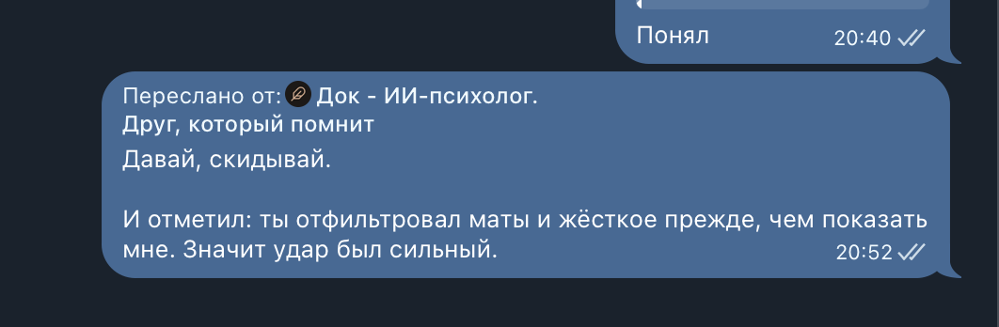

Что говорят люди
19 октября 2026
Натаха, мы с ней сидели за одной партой на алгебре. Держит развод, двоих детей.
Пишет 9 октября.
– Я зашла в Дока. Это прям круто. Пришлось с ним поругаться. Но свою дозу бдсм я получила. Больно он мне сделал.
Подожди, говорю, больно? Или круто?
– Пхахаха. Не разговаривай со мной как Док. Мне чем больнее – тем охуеннее. Как планируешь продвигать?
Не знаю, я не умею продвигать. Поставил любую цену, чтобы выбрал человек.
– Донат то есть? Энергетическую нагрузку денег с себя скинул.
А ты бы сколько заплатила?
– Человек с тремя денежными арканами в дате рождения. Но в 2007 году я бы ответила «хуй на».
В 2007-м у нас был выпуск.
Говорю, что не за деньги топлю, а чтобы это помогало людям.
– Ага. Проходили. Ты вообще это вслух перестань говорить.
Ну кто-то 200, кто-то 1000, потом будет среднее.
– Ты накуриваешься там, что ли? В России давно не был, да?
Год не был. Дождь льёт, я в Питере.
И голосовое.
– Я не пойду за 300 рублей. Я не вижу в этом ценности.
Назови цену. Ты взрослый человек, ты создал свой продукт. Сядь на лавку, оцени, скажи, сколько он стоит. Что значит от 200 рублей? То есть ты себя оцениваешь… В 36 лет. Реально охуенный продукт. От стакана кофе до чего, до бизнес-ланча?
Будь хозяином своего продукта.
Если мне скажут: оценивай – я в эту игру не пойду. Меня вовлекают в историю, где человек не хочет брать на себя ответственность. Возьми на себя ответственность за свой продукт. Назови цену.
Удар. Я хватаю руками невидимый столб. Дождь заливает экран телефона. Тапаю Натахе в ответ: «спасибо», «понял».
Возьми на себя ответственность за свой продукт. Назови цену.
Проваливаюсь в чёрную пустоту. Пересылаю всё Доку, чтобы завтра обсудить.

Что пишут люди, я не читаю. У меня есть индикатор. Он показывает одно из трёх: тяжёлый разговор, нормальный или благодарность.
Кто-то заблокировал бота, даже не начав переписку. Я не стал смотреть, кто это, и записал правило: не смотрю. Только если человек сам попросит.
Через бота ко мне ничего не приходит. Я не различаю людей и счетов не веду. Пока это держится на моём слове.
Примерно тогда же написал Илюха – Java-разработчик, мы с ним работали. Спросил про анонимность. Доступ к серверу у меня есть, ответил я. Но ни переписки, ни имён я не вижу: сам так устроил. Не верь на слово, проверь. Предложил ему аудит.
С прошлого поста – 111 разговоров. Один раз сработал кризис-чек: разговор о причинении вреда себе. Семь закончились благодарностью.
Эти семь благодарностей и были отзывами. Надо было сразу спросить у людей, можно ли их опубликовать. Спрашивать об этом Док научился уже после. Отзывов так и не получил. Поэтому тянул с постом.
Больше я ничего не знаю. Иду вслепую.
Компания, которая живёт на донатах, не знает, сколько получит завтра. А платит каждый день. Бесплатный сервис – это самоуничтожение дела. Будущего у такой компании нет. Я не вытяну конкуренцию и не увижу, ценят ли это люди.
А Доку будущее нужно. Я работаю над ним с апреля. Ходил по краю обрыва с верёвкой в рюкзаке. Бот, которого я сделал, спас мне жизнь.
Натаха – @semicheva_games, Илюха – @iturukin.